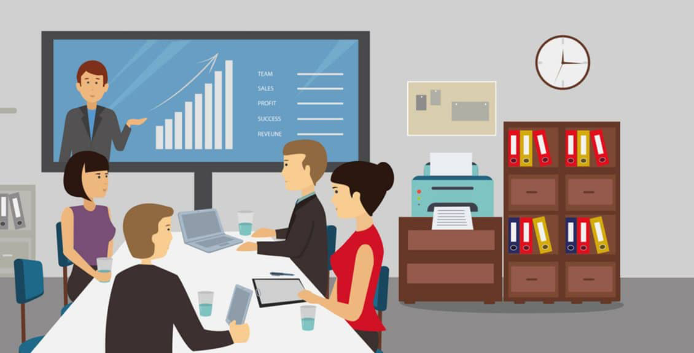

With an abundance of data over the internet, getting your message out for the business is becoming harder. Animation can be used here to break the over-produced content, make it, or break it at whatever point you want into a split-second.
While motion graphics is a great source of storytelling that combines both graphic design and animation. Motion graphic animation showcases complex concepts, complex ideas, and huge data’s into a short, simple, and appealing video. Thus, it helps to deliver the message in the fastest way, grabs and hold your viewer's attention. Animations can be used in any areas you want-IT solutions, marketing, business, education, healthcare, entertainment, or social networking sites.
Why it is important?
• It increases your brand recognition. Your audience will easily understand stats and complex ideas if it is presented in very simple terms and engaging way. People retain 95% of your message if it is informed of a video in comparison to 10% while reading text.
• It is cost and time effective. By familiarising with various motion graphics trends you will be needing a very little time effort to create eye-catching motion graphics with animation design.
• People tend to share videos more than text or static images, thus make your content sharable. Facebook videos almost get around 8 billion views daily.
• Study reports show if your website has motion graphics its 53 times likely to be shown on google’s first page.
• It increases sales and has a better return on investment. Motion graphic content manages around 300% more traffic also generating leads.
• People prefer spending their time around 2.6x more on browsing videos than sites without videos. A survey shows videos are anticipated to reach 82% of internet traffic by 2021.
The growing demand by the public together with the need for attention is demanded by advertisers for creative advertising and marketing which will lead to even more sophisticated and attractive designs.
1. Thin Lines
Thin lines have a various function in a video that includes giving a direction, defining shapes and dictating the mood of a video. However this year, artists are trying to create animations that look like real hand drawings pictures. Which adds unique style to the video.
Many businesses have already tried this trend in their promotional and explainer videos.
Please click to see the examaple: https://vimeo.com/84683227
2. Grain
The grain is a tool that artists use to add life to flat visuals for an authentic look. The visual images look a bit natural, rough, and close to real-world surfaces. It helps in delivering eye-catching visuals to consumers. It gives a sense of creativity and home-made quality.
Please click to see the examaple: https://vimeo.com/268837412
3. Animated logos
Every business wants a long and lasting impression of their company, thus animated logos create that first impression by perfectly capturing the user’s attention. It is also one of the most important trends in brand identity design. It creates a more attractive, positive looking, and lasting effect for customers.
4. Morphing
Morphing is also getting popular in 2020 too. Due to the short attention span of users, the concept of morphing in images, logos in a video is gaining popularity. It provides a quick and seamless transition for animation which changes its image or shapes.
It is usually beneficial to use this on websites as it helps to keep visitors on-page and increasing time spent on the website. It also improves your search engine optimization as Google boosts those sites which are engaging.
5. Kinetic typography
Artists generally prefer not to do anything unconventional with fonts or images due to high chances of low readability. In recent times artists take up new challenges in breaking up traditional rules thus producing great results. Kinetic typography in recent times goes beyond the traditional methods while encouraging twisting, stretching, and distorting letters. Which people love it.
Please click to see the examaple: https://www.youtube.com/watch?v=8fsH8qxDDY4
6. Joining 2D and 3D
People are still merging 2D and 3D animation this year, 2020. Motion graphic designers mix 2D and 3D as people love the way video tells stories. The best part of mixing 2D and 3D is inserting 2D overlays with movement. This trend has been used in many big as well as small advertisements.
Please click to see the examaple: https://www.youtube.com/watch?v=EwJlVpRrzYY
7. Retro motion graphics
These kind of graphics gives a fresh and nostalgic feeling to a video. Designers are using it to make videos even, expect more of retro graphics in 2020.
Please click to see the examaple: https://vimeo.com/162341701
8. 3D overall
Starting from game designing to sales presentation 3D elements are being used. Artists are focusing on inserting 3D elements everywhere. Almost everything in 2020 comes in 3D.
Please click to see the examaple: https://www.youtube.com/watch?v=FEcZMa0XwvI
9. Fantasy
Many popular series like game of thrones, the witcher are already using fiction in motion graphics and their viewer counts are in millions. This shows how much it is trending and how much people love it. Fantasy is generally adding fantasy characters like beasts, mythical landscapes into reality.
Please click to see the examaple: https://pin.it/6Qn7cZp
10. Virtual Reality
Virtual reality is getting famous from various games, videos and its need is increasing in 2020. It's getting famous due to its unreal effects and superior quality. The room for creativity in virtual reality is endless thus making its market size to touch around $44.7 billion in2024 with an annual growth rate of around 34%.
Please click to see the examaple: https://www.youtube.com/watch?v=hNAbQYU0wpg
To sum it up
2020 is the year of positive changes for animation and motion design concepts for a motion graphic artist. Despite the popularity of certain videos, one should keep the nature of the video in mind while selecting videos.
Here we have considered the top ten potential trends in 2022 for animation and motion design. Feel free to contact us, best studios an animation company if you face any trouble regarding Animation and motion design videos. We are there to solve your queries.